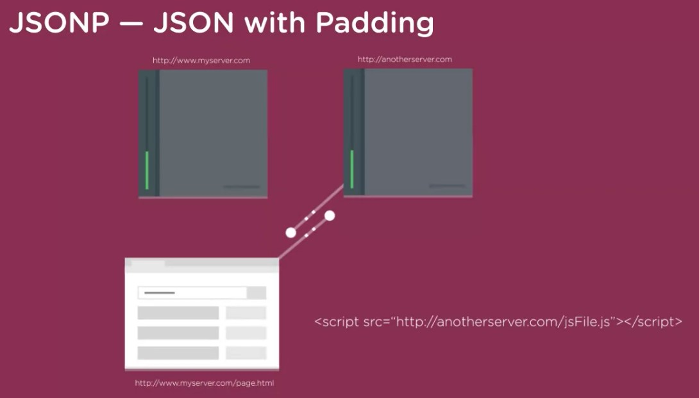

Ajax Concepts
- Ajax stands for Asynchronous JavaScript and XML.
- Ajax lets you update HTML without loading a new webpage
- Google Maps is a good example as it allows you to search for location and navigate all doing this quickly without loading a new HTML page
Loading new content without loading new web pages
- reddit is a website that has many posts, you can vote for a post to be shown higher. This click of a button to vote sends a message to the reddit server

- Normally when you require more information or submit a form a new web page is created or required. Ajax is quicker and faster and lets you get that information from a webserver

With ajax not the whole page of information is brought back just what is required. Javascript is used to apply this information to the parts of the webpage- The internet is made up of browsers or clients making requests from servers and servers providing responses.
- You can see Ajax working within the console by clicking the cox in the console and selecting Log XMLHttpRequests

You see the above image using GET api requests from a server to pull information
- You will need to know Php, Ruby, Python, Cold Fusion and a few others for the server side.
- Ajax has been around for a long time first introduced by Microsoft in 1999 with IE 5. Also known as XHR
- Javascript is used to make Ajax happen - for both request and response
Ajax uses Asynchronous technology to keep loading the html while getting the response from the server
- What is one characteristic of "asynchronous" AJAX requests? - Call backs for multiple AJAX requests may not run in the order the requests were sent
Yes. Servers may take longer to respond to certain requests, so callbacks run in the order in which the responses return.
- Web browsers use XMLHttpRequest Object to manage AJAX requests
- How Ajax works

- To get ajax working you will need a web server running on your machine
- Below is a simple AJAX Example
- Create an XMLHTTP Request object, each AJAX request will need one variable each - var xhr = new XMLHttpRequest();.
This is created in the HTML page between the script tags. The variable can be called whatever you want.
- Create a call back function, this is the code that runs when the server sends the reponse. Ajax comes with its own set of JS events.
We use the xhr.onreadystatechange, xhr is the variable we defined above. This again goes in the HTML between the script tags.
readystatechange is the event handler and we use the attribute readyState, readyState has different stages and these are represented by numbers 0 to 4.
Create some space in the HTML to place the response, this could be a div tag with a ID which you can call the element later. Dont forget to use innerHTML when getting hold of the element.
so your element code should look something like document.getElementById("ajax").InnerHTML = xhr.responseText;. We are here storing the response text and storing inside the DIV
- Open a request - xhr.open("GET", "sidebar.html");. This uses a get meathod to pull information and sidebar.html is just another html file. Open just gets ready for a request but doesnt actually make the request
- Send the request - xhr.send();. This actually sends the request

- The below images shows the above example but this time the ajax is ran on a click of a button, the button disappears after the ajax request is ran
- You need to specify the meathod you would like to use to send the request and URL you are sending the request to. AJAX has two main meathods POST and GET
- GET meathod is mainly used to recieve data and POST meathod is used when you are sending data that is going to be saved like a email being used for a sign up form
- The GET meathod uses the URL to perform the query and is not as secure as the POST meathod. Difference between the two
- The general rule of Thumb is use a GET meathod when requesting data and POST when sending data to be stored
- Two common data interchange formats are XML and JSON. This is data being sent from the server back to the website that made the AJAX request
- XML - extensible markup lanuage - Like HTML and uses tags. You can make up XML tags.

- JSON is the perfered method to use and works well with JS
- AJAX is not a API it can only be used for other pages on your web server
- AJAX will only work on the same server and only on HTTP. Cant speak to other servers and cant speak to HTTPS protocol even if its your own server
You canr also switch from the standard port of 80 for HTTP to another port. You also cant switch hosts.
- The way around the above point is to use a web proxy - A script will be required which will be created in PHP and RUBY
- JSONP - JSON with Padding.

- JSONP can link to jQuery, you rather link to the jQuery library to save space and resource. The purpose of jQuery is to make it much easier to use JavaScript on your website.
jQuery link - Google CDN Link
- CORS can be used to make AJAX requests across domains
CORS does require some setup on the server but can deal with lots of complex authentication
- AJAX ONLY WORKS ON A SERVER NOT LOCALLY ON A MACHINE